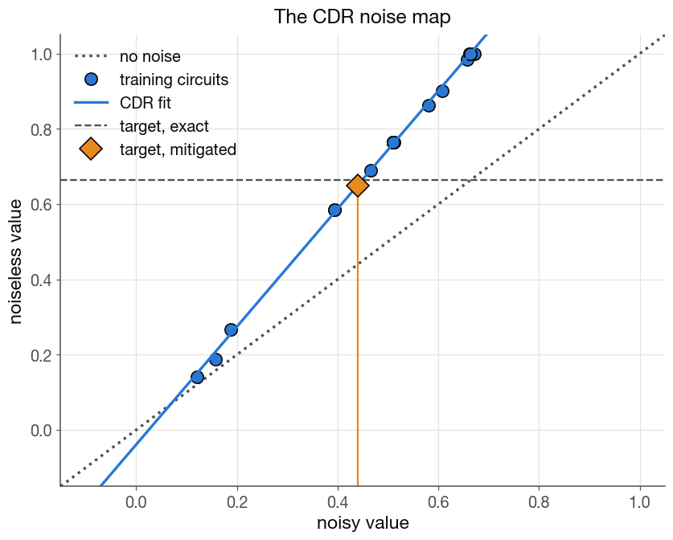
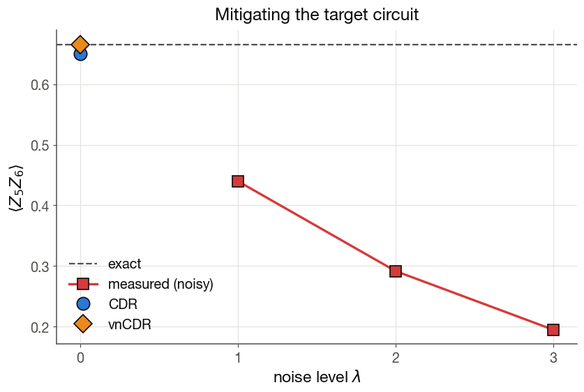
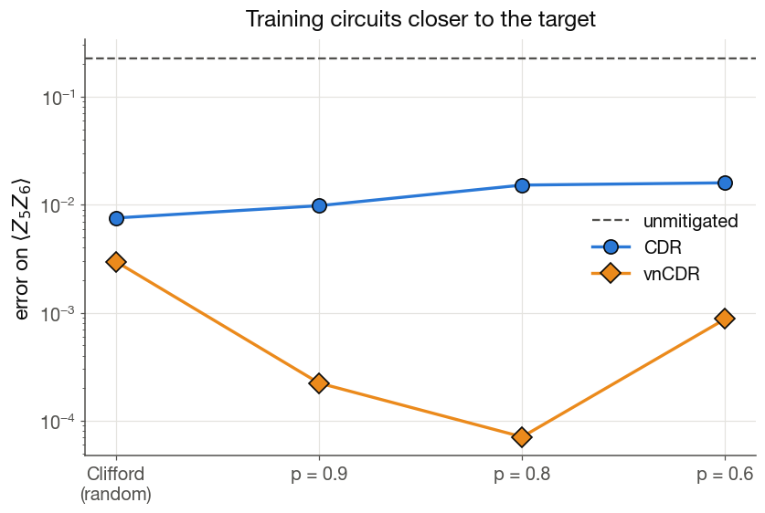

Error mitigation with Clifford data regression¶
Noise biases every expectation value a quantum computer returns. Clifford data regression (CDR) learns how: it runs circuits that look like the target but whose noiseless values we can compute, and fits a map from noisy to noiseless values. The map then corrects the target’s noisy value.
The circuits CDR learns from are the target with most of its non-Clifford gates swapped for Clifford ones. They hold little magic, which is exactly what mpstab simulates cheaply, so mpstab gives both their noiseless values and, given a noise model, their noisy ones.
In this tutorial you will:
learn a noise map with
cdrand use it to mitigate a noisy value;do better with variable-noise CDR,
vncdr;see how much magic to leave in the training circuits;
plug in your own device instead of a simulated noise model.
[1]:
import time
import matplotlib.pyplot as plt
import numpy as np
from qibo import gates
from mpstab import HSMPO
from mpstab.models.ansatze import KickedIsing
from mpstab.models.error_mitigation import cdr, noisy_value, training_circuits, vncdr
from mpstab.models.noise import CoherentError, DepolarizingError, NoiseModel, ReadoutError
from mpstab.plotting import COLORS, set_style
set_style()
The circuit and its noise¶
Our target is a 12-qubit kicked Ising chain with three steps. Its kicks and couplings are all non-Clifford, so it holds plenty of magic. We measure the \(Z Z\) correlation between the two central qubits.
The noise model mimics a superconducting device: depolarizing noise after every gate, ten times stronger on the CNOTs, a residual coherent \(ZZ\) coupling on the CNOTs and asymmetric readout errors.
[2]:
nqubits = 12
ansatz = KickedIsing(nqubits=nqubits, n_steps=3, theta_h=0.7, theta_z=0.3, theta_j=-1.3)
observable = "I" * 5 + "ZZ" + "I" * 5
noise = (
NoiseModel()
.add(DepolarizingError(2e-3), gates.RX)
.add(DepolarizingError(2e-2), gates.CNOT)
.add(CoherentError("ZZ", 0.03), gates.CNOT)
.add(ReadoutError(0.01, 0.03))
)
target = HSMPO(ansatz, progress=False)
exact = target.expectation(observable)
noisy = noisy_value(target, observable, noise, seed=1)
print(f"{target.n_gates} gates, {target.n_magic_gates} of them magic")
print(f"exact <ZZ> = {exact:+.4f}")
print(f"noisy <ZZ> = {noisy:+.4f} (error {abs(noisy - exact):.3f})")
171 gates, 105 of them magic
exact <ZZ> = +0.6653
noisy <ZZ> = +0.4399 (error 0.225)
noisy_value is a thin wrapper around HSMPO.noisy_expectation: it plays the role of the quantum computer here. The noise pulls the correlation well below its true value. Let’s correct it.
Training circuits¶
training_circuits samples variants of the target: each non-Clifford gate is replaced by its nearest Clifford gate with probability replacement_probability, and kept otherwise. The few magic gates left make each training circuit a bit different, and keep it close to the target.
[3]:
circuits = training_circuits(ansatz, 5, replacement_probability=0.8, seed=0)
magic = [HSMPO(c, progress=False).n_magic_gates for c in circuits]
print("magic gates in five training circuits:", magic, f"(target: {target.n_magic_gates})")
magic gates in five training circuits: [31, 16, 22, 26, 23] (target: 105)
CDR: one noisy value per circuit¶
cdr samples the training circuits, computes each one’s noiseless and noisy value with mpstab and fits the line \(\langle O \rangle_{\rm exact} = a\, \langle O \rangle_{\rm noisy} + b\). It returns a MitigationNoiseMap: call it on a noisy value to get the mitigated one. n_workers spreads the training circuits over processes.
[4]:
start = time.perf_counter()
noise_map = cdr(
ansatz, observable, noise,
n_training_circuits=30, replacement_probability=0.8, seed=0, n_workers=4,
)
print(f"trained in {time.perf_counter() - start:.1f} s, fit a = {noise_map.params[0]:.3f}, b = {noise_map.params[1]:+.4f}")
mitigated_cdr = noise_map(noisy)
print(f"CDR <ZZ> = {mitigated_cdr:+.4f} (error {abs(mitigated_cdr - exact):.3f})")
trained in 5.9 s, fit a = 1.567, b = -0.0390
CDR <ZZ> = +0.6501 (error 0.015)
The map keeps its training data, so we can look at what it learned. Each blue dot is a training circuit; the line is the fitted map. The noisy value of the target, projected onto the line, lands close to its exact value.
[5]:
lims = np.array([-0.15, 1.05])
fig, ax = plt.subplots(figsize=(7.5, 6))
ax.plot(lims, lims, ":", color=COLORS["gray"], label="no noise")
ax.plot(noise_map.noisy, noise_map.exact, "o", color=COLORS["blue"], label="training circuits")
ax.plot(lims, noise_map(lims), "-", color=COLORS["blue"], label="CDR fit")
ax.axhline(exact, ls="--", color=COLORS["gray"], lw=1.5, label="target, exact")
ax.plot([noisy, noisy], [lims[0], mitigated_cdr], "-", color=COLORS["orange"], lw=1.5)
ax.plot(noisy, mitigated_cdr, "D", color=COLORS["orange"], ms=13, label="target, mitigated")
ax.set(xlim=lims, ylim=lims, xlabel="noisy value", ylabel="noiseless value", title="The CDR noise map")
ax.legend(loc="upper left")
plt.show()

Variable-noise CDR¶
CDR assumes the noise acts on every circuit in the same, linear way. Variable-noise CDR adds information: it measures each circuit at several noise levels and learns the noiseless value as a linear combination of them, \(\langle O \rangle_{\rm exact} = \sum_\lambda c_\lambda \langle O \rangle_\lambda\). It is zero-noise extrapolation whose coefficients are learned rather than assumed.
With a noise model, amplification="scale" multiplies every error’s strength by the level; on hardware you would fold the circuit instead (amplification="fold", or fold_circuit yourself).
[6]:
levels = (1, 2, 3)
start = time.perf_counter()
vn_map = vncdr(
ansatz, observable, noise, noise_levels=levels,
n_training_circuits=30, replacement_probability=0.8, seed=0, n_workers=4,
)
print(f"trained in {time.perf_counter() - start:.1f} s, coefficients {np.round(vn_map.params, 3)}")
noisy_levels = [noisy_value(target, observable, noise, level, seed=1) for level in levels]
mitigated_vn = vn_map(noisy_levels)
print(f"vnCDR <ZZ> = {mitigated_vn:+.4f} (error {abs(mitigated_vn - exact):.4f})")
trained in 8.2 s, coefficients [ 2.261 -0.755 -0.559]
vnCDR <ZZ> = +0.6654 (error 0.0001)
Plotting the target’s value against the noise level shows what both methods do: they bring the measured values back to the noiseless limit, with vnCDR landing almost exactly on it.
[7]:
fig, ax = plt.subplots(figsize=(7.5, 5))
ax.axhline(exact, ls="--", color=COLORS["gray"], lw=1.5, label="exact")
ax.plot(levels, noisy_levels, "s-", color=COLORS["red"], label="measured (noisy)")
ax.plot(0, mitigated_cdr, "o", color=COLORS["blue"], ms=12, label="CDR")
ax.plot(0, mitigated_vn, "D", color=COLORS["orange"], ms=12, label="vnCDR")
ax.set(xlabel="noise level $\\lambda$", ylabel="$\\langle Z_5 Z_6 \\rangle$",
xticks=[0, *levels], title="Mitigating the target circuit")
ax.legend(loc="lower left")
plt.show()

How much magic to keep¶
The replacement probability sets how close the training circuits are to the target. Replacing every gate gives pure Clifford circuits, as in the original CDR; with the closest replacement those would be thirty copies of one circuit, so we draw the Clifford angles at random instead. Lower probabilities keep more magic gates: the training circuits resemble the target more, and cost more to simulate. Let’s compare the mitigated error across these choices.
[8]:
settings = [(1.0, "random"), (0.9, "closest"), (0.8, "closest"), (0.6, "closest")]
errors = {"CDR": [], "vnCDR": []}
for p, method in settings:
kwargs = dict(n_training_circuits=30, replacement_probability=p,
replacement_method=method, seed=0, n_workers=4)
errors["CDR"].append(abs(cdr(ansatz, observable, noise, **kwargs)(noisy) - exact))
errors["vnCDR"].append(abs(vncdr(ansatz, observable, noise, levels, **kwargs)(noisy_levels) - exact))
labels = ["Clifford\n(random)", "p = 0.9", "p = 0.8", "p = 0.6"]
x = np.arange(len(settings))
fig, ax = plt.subplots(figsize=(7.5, 5))
ax.axhline(abs(noisy - exact), ls="--", color=COLORS["gray"], lw=1.5, label="unmitigated")
ax.plot(x, errors["CDR"], "o-", color=COLORS["blue"], label="CDR")
ax.plot(x, errors["vnCDR"], "D-", color=COLORS["orange"], label="vnCDR")
ax.set(yscale="log", xticks=x, xticklabels=labels, ylabel="error on $\\langle Z_5 Z_6 \\rangle$",
title="Training circuits closer to the target")
ax.legend(loc="center right")
plt.show()

The two methods react differently. CDR’s error barely moves: a single straight line is what limits it, not which circuits it learns from. vnCDR gains more than an order of magnitude when the training circuits keep some magic, since its learned extrapolation then matches how the target responds to the noise; with too much magic left (p = 0.6) the training values spread less and the gain shrinks. These numbers come from one seed and one circuit, so take the trend, not the digits: a replacement probability around 0.8 to 0.9 is a good default, and mpstab keeps those training circuits cheap.
Using your own device¶
So far the noisy values came from a simulated noise model. On real hardware, pass a function instead: cdr calls it on every training circuit (a qibo Circuit) and expects the measured expectation value back; for vncdr it also receives the noise level. mpstab still computes all the noiseless values.
Below, a stand-in “device” runs the circuit through the same noise model, so the result matches the one above.
[9]:
def run_on_device(circuit):
"""Measure <ZZ> on the device. Here: a simulated one."""
return noisy_value(HSMPO(circuit, progress=False), observable, noise, seed=1)
device_map = cdr(ansatz, observable, run_on_device, n_training_circuits=30,
replacement_probability=0.8, seed=0)
print(f"CDR with a device function: {device_map(noisy):+.4f}")
CDR with a device function: +0.6504
Summary¶
cdr(ansatz, observable, noise)learns a noise map from low-magic training circuits, which mpstab simulates cheaply; call the map on a noisy value.vncdradds noise levels and learns a zero-noise extrapolation; it is usually far more accurate.replacement_probabilitysets how much magic the training circuits keep: around 0.8 to 0.9 helps vnCDR most, and mpstab keeps it cheap.noisecan be aNoiseModelor your own function running circuits on hardware.
The Noise and Advanced noise tutorials show how to build richer device noise models, such as relaxation, crosstalk and idling, which cdr and vncdr accept unchanged.